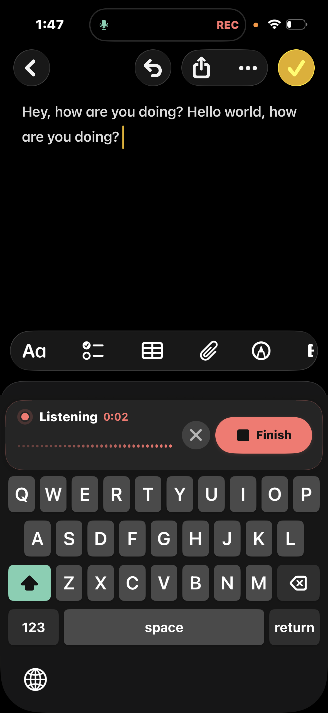

private voice typing,
on your iPhone.
Install the public TestFlight beta on an iPhone with iOS 17 or newer, download an on-device model, and enable the keyboard. No Mac or gateway is needed for the TestFlight route.
There is no App Store release yet. A TestFlight build expires after 90 days; install newer beta builds through TestFlight.

View full screenshot ↗Three steps to your first dictation.
- 01
Install and open VocaPhone
Join the public TestFlight beta above, install VocaPhone, and follow its setup. Choose and download an on-device speech-to-text model.
- 02
Enable your keyboard
Allow microphone access in VocaPhone. In iOS Settings → General → Keyboard → Keyboards, add VocaPhone and enable Full Access so the app and keyboard can coordinate.
- 03
Speak in a text field
Open Notes and select VocaPhone with the globe key. Start dictation, return to Notes while the app records, and tap Finish on the keyboard. Your transcript appears at the cursor.
Watch the iPhone screenshot walkthrough →
Full Access coordinates with the containing app. The keyboard itself cannot use the microphone. The gateway is optional.
Prefer to build from source?
This route needs a Mac, Xcode, Apple signing, and a physical iPhone. The gateway is optional. Choose and download an on-device model during setup if you want speech-to-text to stay entirely on the iPhone.
-
01
Get the source
Clone the repository and fetch the native Sherpa ONNX runtimes.
git clone --recurse-submodules https://github.com/VocaHQ/vocaphone.git cd vocaphone just ios fetch -
02
Prepare Apple signing
Open
ios/VocaPhone.xcodeproj, choose your Apple development team, and configure matching App Group capabilities for the app, keyboard, and Live Activity targets. If the VocaHQ identifiers are unavailable to your team, replace them consistently in the project configuration and entitlements first. -
03
Install on a physical iPhone
Connect the iPhone, select it as the run destination, build VocaPhoneApp, open the installed app, and grant microphone access.
-
04
Choose on-device speech-to-text
In VocaPhone setup, choose an on-device model, download it, and wait for its integrity check to finish. No gateway address or token is needed for this mode.
-
05
Enable the keyboard
Open Settings → General → Keyboard → Keyboards, add VocaPhone, and enable Full Access so the keyboard and containing app can share the current dictation state.
-
06
Try a real text field
Open Notes, select the VocaPhone keyboard, dictate, finish the recording, and return to insert the transcript. iOS does not permit keyboard extensions to access the microphone, so the companion app owns recording while the model still runs on the iPhone.
Need the complete developer and physical-device details?
read the verified device checklist read the build documentation